Akabeko
El primer ataque en cada combate hace 8 de daño adicional.
Muuu~
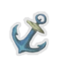
Anchor
Comienza cada combate con 10 de bloqueo
Sosteniendo este tesoro en miniatura te sientes mas pesado y estable.
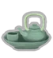
Ancient Tea Set
Al entrar en una zona de descanso, el proximo combate comenzarás con 2 energías extra.
La clave para una refrescante noche de descanso
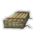
Art of War
Si no juegas un ataque durante tu turno, gana una energia extra el siguiente turno.
Este antiguo manuscrito contiene sabiduría de una época pasada.
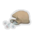
Bag of Marbles
Al comienzo de cada combate aplica 1 vulnerable a todos los enemigos.
Un juguete una vez popular en las ciudades. Util para hacer resbalar a tus enemigos.
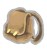
Bag of Preparation
Al comienzo de cada combate roba 2 cartas adicionales.
Paquete de aventurero de gran tamaño. Tiene muchos bolsillos y correas.
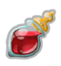
Blood Vial
Al comienzo de cada combate, cura 2 hp
Un vial que contiene la sangre de un puro y anciano vampiro.
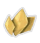
Bronze Scales
Cuando recibas daño, haz 3 de daño de vuelta.
Las escamas afiladas del Guardián. Se reorganizan para proteger a su usuario.
Centennial Puzzle
La primera vez que pierdas hp cada combate, roba 3 cartas.
Al resolver el rompecabezas sientes una poderosa calidez en tu pecho.
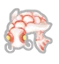
Ceramic Fish
Cada vez que añades una carta a tu mazo, gana 9 de oro.
Pintado meticulosamente, estos peces fueron venerados para atraer grandes fortunas
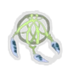
Dream Catcher
Cada vez que descanses, puedes añadir una carta a tu mazo.
Las tribus del norte solían utilizar atrapa sueños durante la noche, creyendo que eran el camino a la superación personal
Happy Flower
Cada 3 turnos obtienes 1 de energía.
Esta incesantemente jubilosa planta es un item nobiliario muy popular entre los nobles.
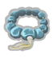
Juzu Bracelet
Ya no se pueden encontrar combates contra enemigos normales en habitaciones "?".
Una protección contra lo desconocido.
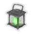
Lantern
Gana 1 de energía el primer turno de cada combate.
Una linterna misteriosa que ilumina solo para su portador.
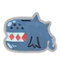
Maw Bank
Cada vez que asciendas un piso, gana 12 de oro. Deja de funcionar cuando gastas dinero en la tienda.
Sorprendentemente puplar, a pesar de que los ataques de maw son frecuentes.
Meal Ticket
Cada vez que entras en una tienda, cura 15 hp.
¡Ración de albondigas con cada visita!.
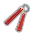
Nunchaku
Cada vez que juegues 10 ataques, gana 1 de energía
Una buena herramienta de entramiento. mejora la postura y la agilidad de quien la usa.
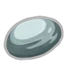
Oddly Smooth Stone
Al comienzo de cada combate, gana 1 de destreza.
Nunca jamás has visto nada tan suave y pristino. Esto debe ser un trabajo de los ancianos.
Omamori
Niega las 2 proximas maldiciones que recibas
Un encantamiento común para espantar espíritus. Este parece poseer una chispa de energía divina
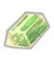
Orichalcum
Si terminas tu turno sin bloqueo, gana 6 de bloqueo.
Un metal tintado de verde de origen desconocido. Parece indestructible.
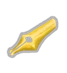
Pen Nib
El decimo ataque que juegues hace daño doble.
Si sujetas la punta puedes ver a todos los que fueron asesinados por anteriores propietarios de la pluma. Una historia violenta.
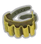
Potion Belt
Al recogerla obtienes 2 ranuras de poción.
¡Puedo llevar mas pociones usando este cinturón!
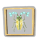
Preserved Insect
Los enemigos de elite tienen 25% menos hp.
El insecto parece crear un aura de encogimiento que tiene como objetivo enemigos particularmente grandes.
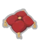
Regal Pillow
Cura 15 hp más cuando descansas.
Ahora puedes tener un noche de descanso apropiada.
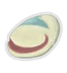
Smiling Mask
Eliminar cartas con el mercader ahora siempre cuesta 50 de oro.
Es la mascara que utiliza el mercader. Debe tener de sobra...
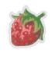
Strawberry
Incrementa tu vida máxima en 7 hp.
"Delicioso, no he visto ninguna de estas desde la plaga." -
Ranwid
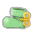
The Boot
Cuando fueras a hacer 4 o menos de daño inbloqueable, haces 5 de daño.
Cuando se le da cuerda, la bota crece de tamaño.
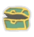
Tiny Chest
Cada cuarta habitacion "?" que encuentres contendrá un tesoro.
"Un buen prototipo."-
El Arquitecto
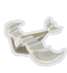
Toy Ornithopter
Cuando utilices una poción, cura 5 hp.
Este pequeño juguete es el perfecto compañero en las aventuras solitarias.
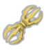
Vajra
Al comienzo de cada combate gana 1 de fuerza.
Una reliquia ornamental concedida a los guerreros que encontraban la gloria en combate.
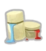
War Paint
Al recogerla mejoras 2 cartas de habilidad aleatorias.
En el pasado los ironclads creaban guardas mágicas usando pintura de guerra encantada antes de cargar a la batalla.
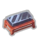
Whetstone
Al recogerla mejoras 2 cartas de ataque aleatorias.
"La carne nunca vence al metal."-
Kublai El Grande